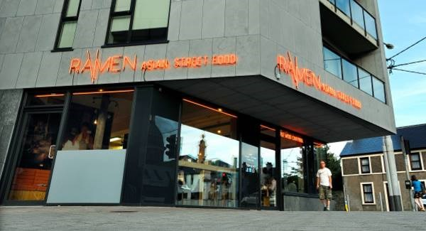
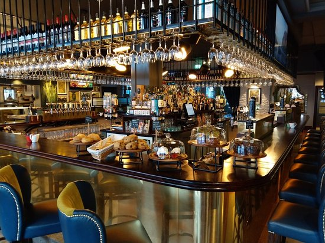

I am a student in first year, studying BIS in University College Cork. I am 19 years old.
Here you can find information about BISI have a variety of different roles including taking customers orders, taking payments, serving food, answering the phone and general restaurant upkeep such as cleaning tables.
I began as a glass collector but soon received a promotion. I was trained into the bar as a result of my hard work and good people skills. My roles included serving customers, taking payments and replacing kegs.
As part of fourth year work experience, I worked in the Munster Branch Offices for one week with a different role each day. I worked in the Accounting Department organising data, worked in IT designing the match programmes and with other departments using Excel. As a result of the good work that I did, I was offered a job selling programmes at the Munster matches in Musgrave Park.
1st year Business Information Systems
| Subject | Grade |
|---|---|
| Business | H1 |
| Biology | H2 |
| Irish | H2 |
| English | H3 |
| Accounting | H3 |
| French | H3 |
| Maths | H4 |